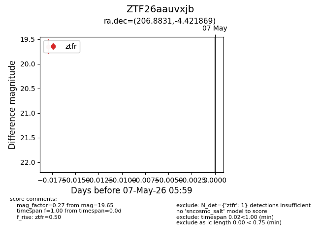
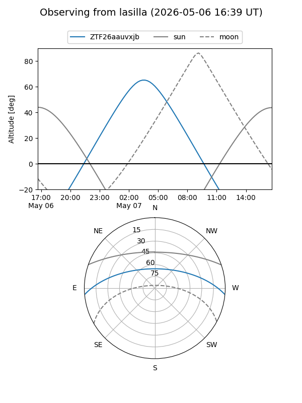
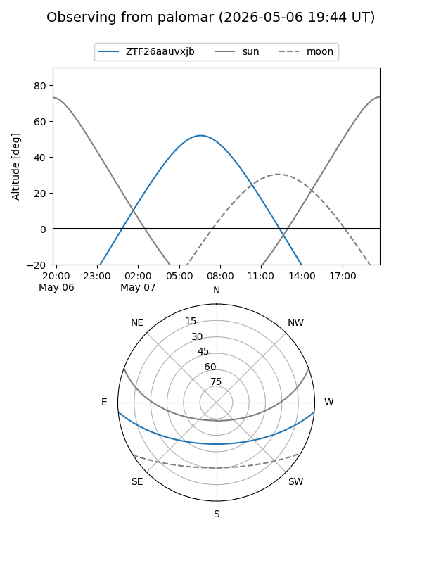

ZTF26aauvxjb
Target ZTF26aauvxjb at 2026-05-07 06:01
Aliases and brokers:
FINK: link
Lasair: link
ALeRCE: link
alt names
ZTF26aauvxjb (ztf,fink_ztf)
Coordinates:
equatorial (ra, dec) = 206.8831,-4.42187
equatorial (HMS+DMS) = 13:47:31.95,-04:25:18.73
galactic (l, b) = (328.2934,+55.66322)
Flags:
Photometry:
last ztfr=19.65
1 ztfr detections
Lightcurve

Visibility


Additional plots